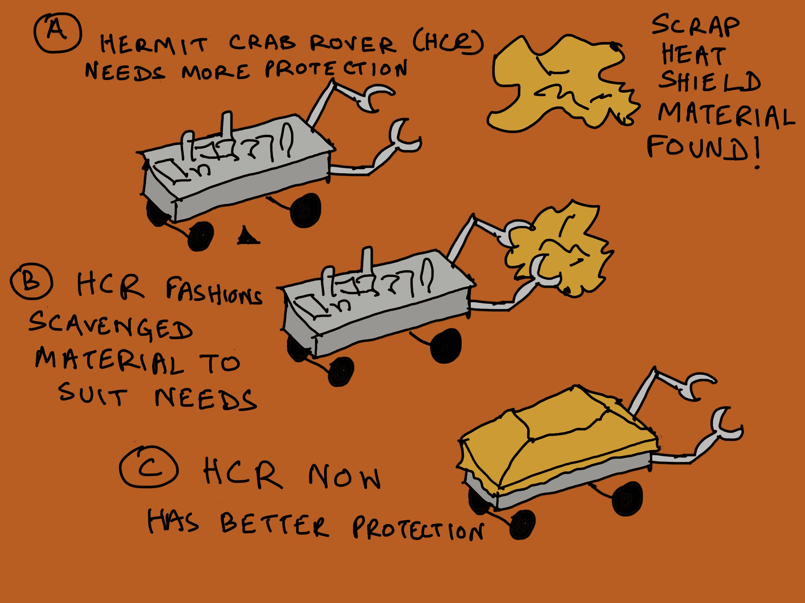
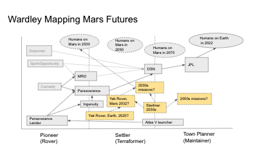

Check out @antlerboy's new post, "Control, demand, need, or customer purpose?". https://antlerboy.medium.com/control-demand-need-or-customer-purpose-4b468bc8e8d3?source=rss-97852f5a56ae------2
Check out @p_millerd's new post, "Don’t Find A Niche, Find A Mode". https://think-boundless.com/dont-find-a-niche-find-a-mode/?utm_source=rss&utm_medium=rss&utm_campaign=dont-find-a-niche-find-a-mode
Check out @tomcritchlow's new post, "A map for indie living". http://tomcritchlow.com/2022/06/03/indie-consulting-map/
Check out @vgr's new newsletter, "Anatomy of a Graph Mind". https://studio.ribbonfarm.com/p/anatomy-of-a-graph-mind
Check out @antlerboy's new post, "Transduction — leading transformation — Issue #52". https://antlerboy.medium.com/transduction-leading-transformation-issue-52-b3f611716e04?source=rss-97852f5a56ae------2
Replying to @yak_collective
11/ Closing Cycle-1 of 2022 YakRover Meetups with a planning meeting for field testing of rovers on Earth in 2022
http://bit.ly/3BLYCsr
https://www.youtube.com/watch?v=S-axwRgp23U
Yak Collective Blockchain Study Group's shared sense making of the article "The Hitchhiker's Guide to Ethereum" by Jon Charbonneau
http://bit.ly/3BLYCsr
https://www.youtube.com/watch?v=ONBZDpGUcmY
Check out @antlerboy's new post, "As I’m sending reminders to the 80 people (!)". https://antlerboy.medium.com/as-im-sending-reminders-to-the-80-people-34c86d5b8496?source=rss-97852f5a56ae------2
Check out @p_millerd's new post, "Lawrence Yeo On The Arc of The Practical Creator, Creativity & Finding Work That Matters (The Pathless Path Podcast)". https://think-boundless.com/lawrence/?utm_source=rss&utm_medium=rss&utm_campaign=lawrence
Check out @antlerboy's new post, "What’s the problem with problem statements?". https://antlerboy.medium.com/whats-the-problem-with-problem-statements-20425e1d6ca2?source=rss-97852f5a56ae------2
Check out @anthilemoon's new post, "Get smarter everyday with Vladimir Oane, founder of Deepstash". https://nesslabs.com/deepstash-featured-tool?utm_source=rss&utm_medium=rss&utm_campaign=deepstash-featured-tool
Check out @p_millerd's new post, "Too Big To Think: Why Prestigious Institutions Stopped Generating Good Ideas". https://think-boundless.com/too-big-to-think/?utm_source=rss&utm_medium=rss&utm_campaign=too-big-to-think
Check out @tomcritchlow's new post, "A Podia Wishlist". http://tomcritchlow.com/2022/06/10/podia-requests/
governance studies group reading bulldozer vs. vetocracy today https://vitalik.eth.limo/general/2021/12/19/bullveto.html #yakbot
Check out @antlerboy's new post, "Transduction — leading transformation — Issue #53". https://antlerboy.medium.com/transduction-leading-transformation-issue-53-b4fc32dd187f?source=rss-97852f5a56ae------2
Check out @vgr's new newsletter, "Graph Vitalism". https://studio.ribbonfarm.com/p/graph-vitalism
Check out @antlerboy's new post, "What the hell is systems | complexity | cybernetics anyway?". https://antlerboy.medium.com/what-the-hell-is-systems-complexity-cybernetics-anyway-58ca4420d4aa?source=rss-97852f5a56ae------2
blockchain ops convo happening now on the discord #yakbot
The Yak Collective Blockchain Study Group concluding the spring cycle with a retrospective.
We had 12 sessions in the spring cycle covering wide range of topics and some hands-on experiments with web3 tools
http://bit.ly/3BLYCsr
https://www.youtube.com/watch?v=Ax5zUbIowZQ
Check out @antlerboy's new post, "So. Today is a migraine day.". https://antlerboy.medium.com/so-today-is-a-migraine-day-a5906e1b04b8?source=rss-97852f5a56ae------2
Check out @anthilemoon's new post, "How to access paywalled research papers without institutional access". https://nesslabs.com/paywalled-research-access?utm_source=rss&utm_medium=rss&utm_campaign=paywalled-research-access
Check out @tomcritchlow's new post, "Rejecting Specialization". http://tomcritchlow.com/2022/06/16/rejecting-specialization/
We’re talking fungi languages in the governance chat today https://royalsocietypublishing.org/doi/10.1098/rsos.211926#d1e375 #yakbot
Check out @vgr's new newsletter, "Getting to Gnome Mode". https://studio.ribbonfarm.com/p/getting-to-gnome-mode
Check out @antlerboy's new post, "Transduction — leading transformation — Issue #54". https://antlerboy.medium.com/transduction-leading-transformation-issue-54-85d36bb3d22e?source=rss-97852f5a56ae------2
Check out @antlerboy's new post, "18 tips from 18 years in consulting". https://antlerboy.medium.com/18-tips-from-18-years-in-consulting-7b626cb3182e?source=rss-97852f5a56ae------2
The Yak Rover team just submitted an idea for a "hermit crab rover" to the natural robotics competition https://www.naturalroboticscontest.com/#apply #yakbot

Check out @tomcritchlow's new post, "Rejecting Specialization". https://tomcritchlow.com/2022/06/16/rejecting-specialization/
at tonight's rover meeting we somehow landed on the conclusion that a key function of earth rovers would be to re-enchant the world for us... present the familiar in a new perspective #yakbot
Check out @randylubin's new post, "Podcast Interview on Amble about Foresight Games". https://blog.randylubin.com/podcast-interview-on-amble-about-foresight-games
Check out @antlerboy's new post, "Demand management is a very bad idea — think about the need-to-demand curve". https://antlerboy.medium.com/demand-management-is-a-very-bad-idea-think-about-the-need-to-demand-curve-8eccbab0b533?source=rss-97852f5a56ae------2
Check out @anthilemoon's new post, "Cognitive bottlenecks: the inherent limits of the thinking mind". https://nesslabs.com/cognitive-bottlenecks?utm_source=rss&utm_medium=rss&utm_campaign=cognitive-bottlenecks
Check out @vgr's new newsletter, "Year One Review". https://studio.ribbonfarm.com/p/year-one-review
Blockchain Governance Study Group Summer Cycle Planning Session up on YouTube
http://bit.ly/3BLYCsr
https://www.youtube.com/watch?v=IgviawJTZx0
Replying to @yak_collective
12/ We frequently post interesting links related to robotics and rovers in our YakRover discord channel.
The link scraping session is up on YouTube
http://bit.ly/3BLYCsr
https://www.youtube.com/watch?v=cR1goVoTw50
Replying to @yak_collective
13/ The second planning session for end of year field tests and demo day led by @not_replica is up on YouTube
http://bit.ly/3BLYCsr
https://www.youtube.com/watch?v=Uzre5-c4YOE
Check out @antlerboy's new post, "What if we treated people as people, instead of employees?". https://antlerboy.medium.com/what-if-we-treated-people-as-people-instead-of-employees-4a100386d550?source=rss-97852f5a56ae------2
Join us tonight at 9PM Pacific for a session on mars vs. earth roving, domestic rovers, rover mouths, and featuring this wardley map 🙂 https://www.yakcollective.org/join.html #yakbot

Replying to @yak_collective
Agenda

Check out @antlerboy's new post, "#systemschange: often over-correcting in a good cause". https://antlerboy.medium.com/systemschange-often-over-correcting-in-a-good-cause-23100934bf63?source=rss-97852f5a56ae------2
Check out @anthilemoon's new post, "Unshackling knowledge management with Samiur Rahman, co-founder of Heyday". https://nesslabs.com/heyday-featured-tool?utm_source=rss&utm_medium=rss&utm_campaign=heyday-featured-tool